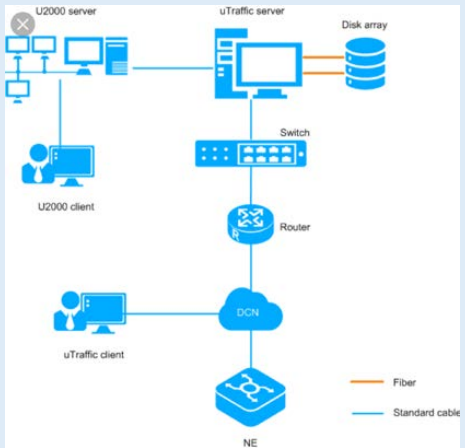
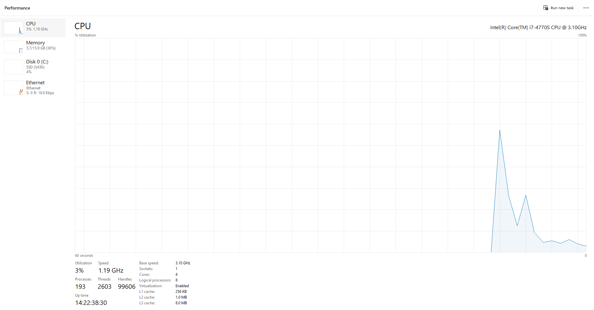
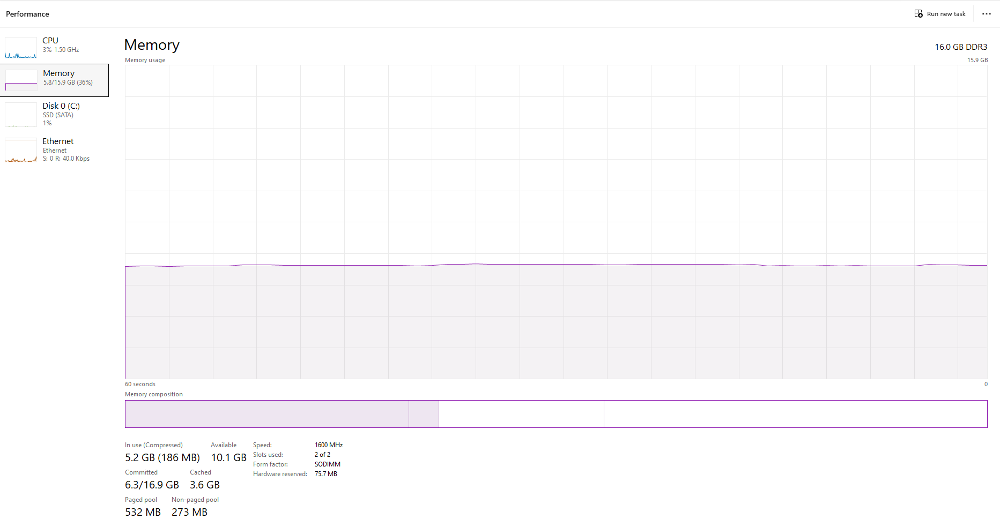
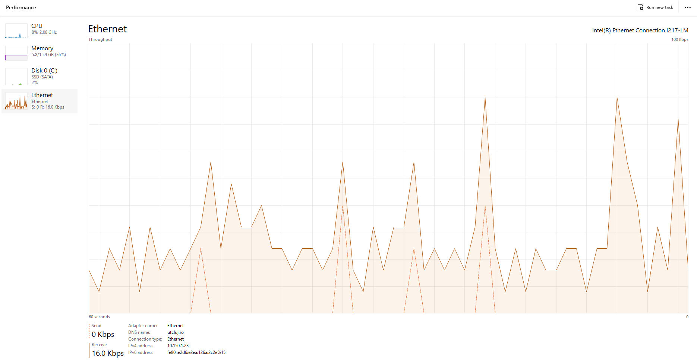

Gaitan Raul-Iulian
Gaitan.Li.Raul@student.utcluj.ro
Componente și caracteristici
| Denumire |
Producător |
Parametri |
| Procesor |
Intel Core i7-4770S |
3.10 GHz, 4 nuclee |
| Memorie RAM |
Kingston |
16 GB DDR3 |
| Stocare |
Kingston |
SSD 447 GB |
Structura rețelei

Caracteristicile conexiunii la rețea
- Viteză download: 300 Mbps
- Viteză upload: 150 Mbps
- Tip conexiune: Fiber / Wi-Fi 5GHz
- Adresă IP locală: 192.168.0.10
Monitorizare resurse


